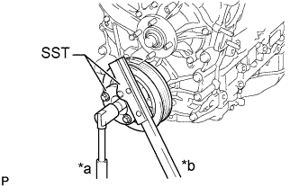
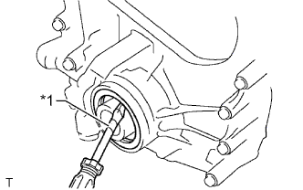

ПЕРЕДНИЙ САЛЬНИК КОЛЕНЧАТОГО ВАЛА > СНЯТИЕ |
| 1. СНИМИТЕ ВЕРХНЕЕ УПЛОТНЕНИЕ КРОНШТЕЙНА РАДИАТОРА |
Освободите 13 фиксаторов и снимите верхнее уплотнение кронштейна радиатора.
| 2. СНИМИТЕ РАСШИРИТЕЛЬНЫЙ БАЧОК РАДИАТОРА |
 |
Отсоедините шланг бачка от радиатора.
Выверните 3 болта и снимите расширительный бачок радиатора.
| 3. СНИМИТЕ КОЖУХ ВЕНТИЛЯТОРА |
 |
Отсоедините захват, чтобы разомкнуть зажим гибкого шланга.
 |
Ослабьте 4 гайки, крепящие вентилятор вискомуфты.
Снимите поликлиновой ремень вентилятора и генератора (Нажмите здесь).
 |
Выверните 2 болта, крепящие кожух вентилятора.
Отверните 4 гайки вентилятора вискомуфты, а затем снимите кожух вместе с вентилятором вискомуфты.
| 4. СНИМИТЕ ШКИВ КОЛЕНЧАТОГО ВАЛА |
|  |
С помощью SST зафиксируйте шкив коленчатого вала и ослабьте болт шкива таким образом, чтобы в коленчатый вал было ввернуто 2-3 витка резьбы.
| *a | Ослабьте |
| *b | Удержание |
 |
С помощью SST и болта шкива снимите шкив коленчатого вала.
| *a | Ослабьте |
| *b | Удержание |
| 5. СНИМИТЕ САЛЬНИК КРЫШКИ ЦЕПНОГО ПРИВОДА ГАЗОРАСПРЕДЕЛИТЕЛЬНОГО МЕХАНИЗМА |
|  |
Извлеките сальник с помощью отвертки.
| *1 | Защитная клейкая лента |